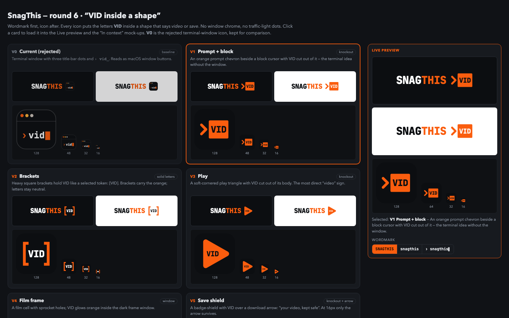
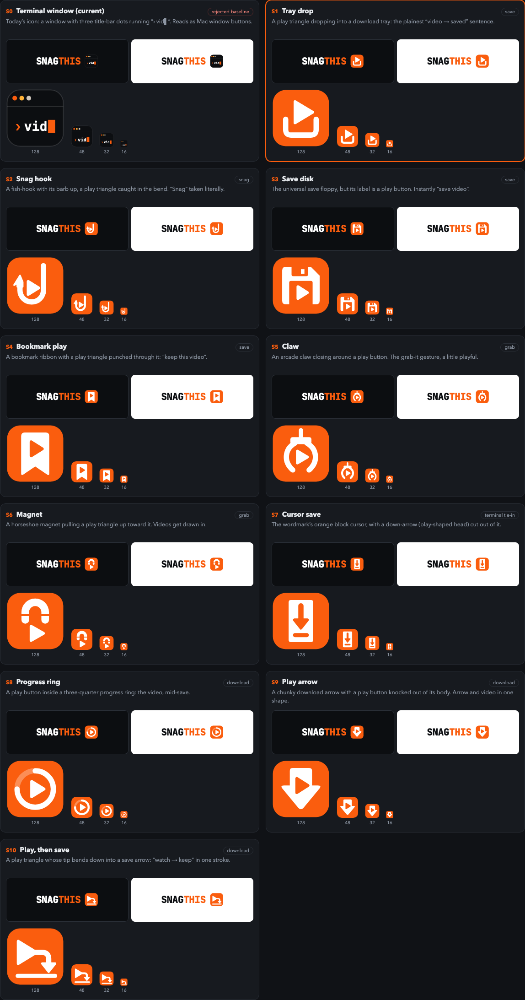
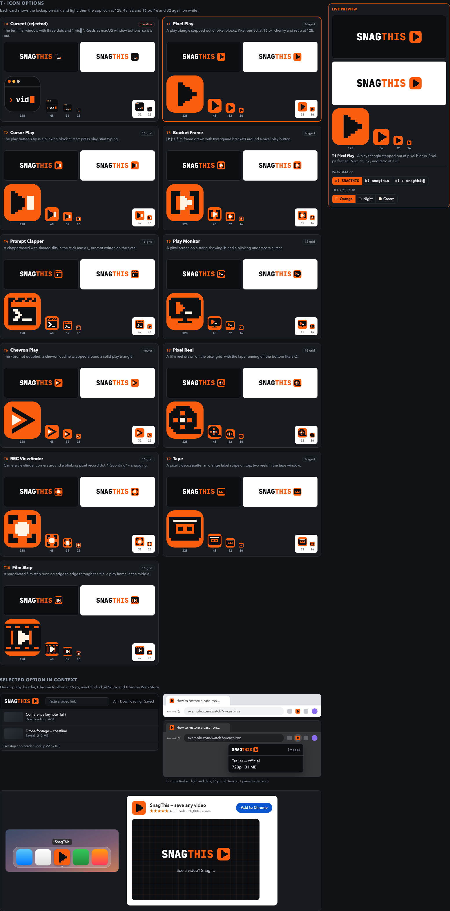
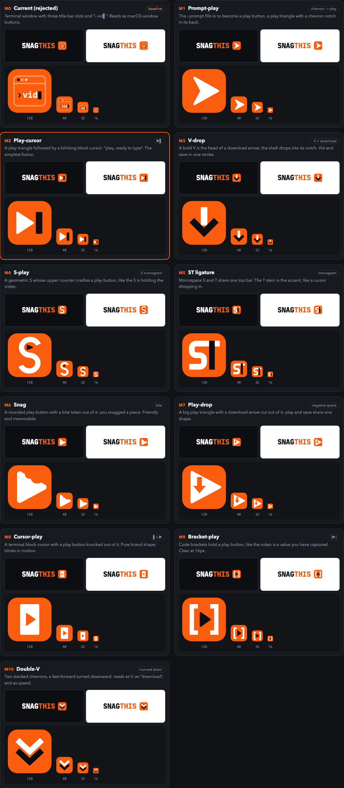

SnagThis — round 6: SNAGTHIS, then an icon
Four sets of 10 icons, all with the name first and the icon after it, and no window buttons. Open a set to click through the options, switch the wordmark (SNAGTHIS · snagthis · › snagthis▌), and see the selected icon in the app header, Chrome toolbar, dock and Web Store. The rejected terminal-window icon is option 0 in each set, for comparison.
VID inside a shape
Open set →Designer’s picks: V3 Play (VID cut out of a play triangle), V8 Download arrow (V-I-D stacked down an arrow), V1 Prompt + block (› beside a VID cursor block).

Save / snag it
Open set →Designer’s picks: S9 Play arrow (download arrow with a play cut-out), S3 Save disk (floppy with a play label), S2 Snag hook (a hook catching a play button).

Video symbols, terminal style
Open set →Designer’s picks: T6 Chevron Play (› wrapped around a play triangle), T3 Bracket Frame ([▶] in pixels), T1 Pixel Play (stepped pixel play button).

Fused marks & monograms
Open set →Designer’s picks: M2 Play-cursor (▶▌), M6 Snag (play button with a bite out of it), M3 V-drop (V as the head of a download arrow).
